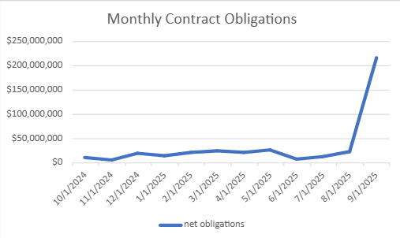
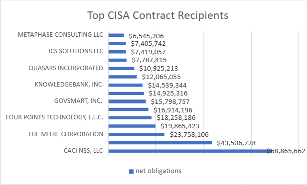
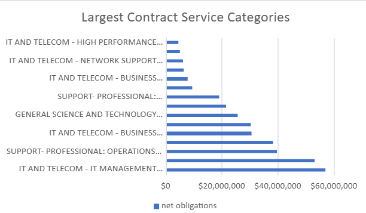
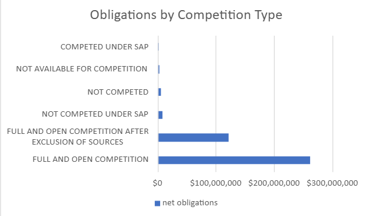

Project Overview
This project examines how CISA obligated contract funding during fiscal year 2025. I used public USAspending transaction data to identify major recipients, leading service categories, competition patterns, and monthly spending trends.
Purpose and Data Source
The purpose of this project was to examine how the Cybersecurity and Infrastructure Security Agency (CISA) used contract obligations during fiscal year 2025 and to identify major vendors, spending categories, competition patterns, and monthly trends.
Source: USAspending.gov Advanced Search
Time period: October 1, 2024–September 30, 2025
Award type: Contracts
Awarding agency: Department of Homeland Security
Awarding subagency: Cybersecurity and Infrastructure Security Agency
Download level: Transactions
USAspending data is publicly available at USAspending.gov Advanced Search .
Key Findings
CACI NSS, LLC received the largest net obligation total, about $68.9 million.
IT management, telecommunications, and end-user IT support were among the largest contract spending categories.
September 2025 had the highest monthly obligations, about $216.9 million.
Dashboard Visualizations
Monthly Contract Obligations

Top CISA Contract Recipients

Largest Contract Service Categories

Obligations by Competition Type

Method
I downloaded FY2025 CISA contract transaction data from USAspending.gov, uploaded it to BigQuery, and wrote SQL queries to group net obligations by recipient, product or service category, competition type, and month. I then exported the results to Excel and created a dashboard to present the findings.